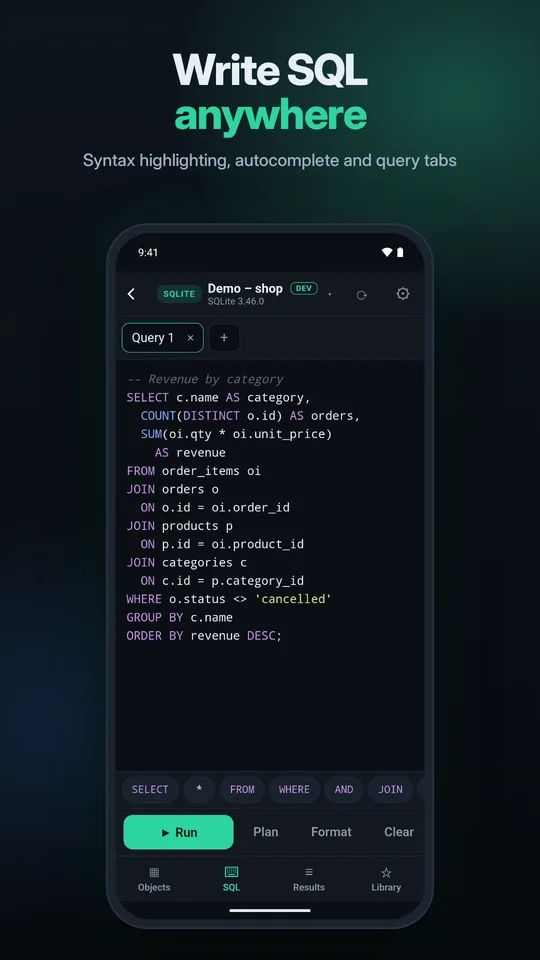

MySQL & MariaDB client for Android
A fast MySQL client in your pocket: write SQL, look at your tables and correct data on any MySQL or MariaDB server – from home, the train or an on-call night.
Works with: MySQL 5.7 / 8.x, MariaDB, PlanetScale, TiDB, Amazon RDS / Aurora MySQL, SingleStore, StarRocks, Apache Doris and other MySQL-compatible servers.

How to connect to MySQL from Android
- Tap + New and choose MySQL / MariaDB, or paste a
mysql://URL orjdbc:mysql://string. - Enter host, port (3306 by default), database and user. Enable SSL for cloud services such as PlanetScale or TiDB Cloud.
- Tag the connection DEV, TEST or PROD – production connections ask for confirmation before every change.
- Connect, pick a table and tap Data, or open the SQL tab to run your own queries.
What you can do
Browse tables
Columns, indexes and DDL for every table and view.
Editor with suggestions
Table and column names suggested above the keyboard, SQL formatter, undo / redo.
Edit rows safely
Change values, add and delete rows with an SQL preview before saving.
Export
CSV and JSON for free; Excel-friendly CSV, TSV, SQL INSERT and Markdown in Pro.
Charts
Turn any result into a bar or line chart with one tap.
Import CSV / Excel (Pro)
Load a spreadsheet into a table directly from your phone.
Private and safe by design
TivaroSQL Studio connects directly from your phone to MySQL – there is no proxy server and no account. Passwords and keys are encrypted with Android Keystore, the app has no ads, analytics or tracking, and you can lock it or a single connection with your fingerprint.
Frequently asked questions
Can I use it with MariaDB?
Yes. MariaDB speaks the MySQL protocol and is fully supported.
Does it work with PlanetScale?
Yes. Use the host, user and password generated in PlanetScale and keep SSL enabled.
Is it free?
The app is free with core features. Pro is a one-time purchase or a monthly subscription.